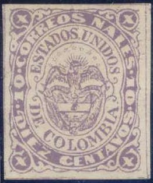
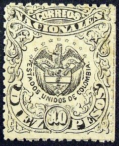
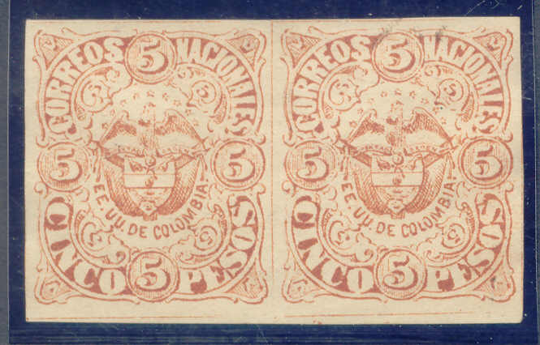
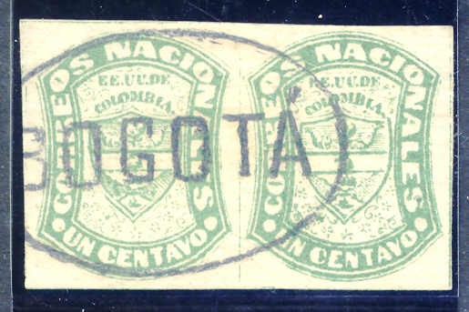

{kind=link}


10 c Michelsen reprint and a tete-beche 50 c value, most likely a Curtis-Michelsen forgery.
Return To Catalogue - Colombia overview
Note: on my website many of the
pictures can not be seen! They are of course present in the
catalogue;
contact me if you want to purchase it.
Gustave Michelsen made some reprints of Colombian stamps. He was a consul and abused his position (see Philatelic Forgers, their lives and works by V.E.Tyler). After changing the name to 'Republica de Colombia' in 1886, the remainders of the previously issued stamps were bought by him for 8 Pesos per thousand stamps (including proofs etc.). They exist with postal cancels (see the Paul Ohrt 'Handbuch der Neudrucke' book for examples). At the same time he made reprints of stamps of which there were no longer stocks with the original printing plates. Together with the printer Demetrio Parades, he reprinted many Colombian stamps (somewhere from 1880 to 1890). He made new stones of plates that could no longer be used. He might have collaborated with the American William Theodore Curtis (see also the Tyler book or the Ohrt reprint book; Ohrt does not mention Michelsen by the way).
The following values were reprinted:
1860: 1 Peso red (see Ohrt, no dividing lines in the reprints)
1868: 10 c (only the type with 'B' on top of 'V'), 50 c and 1
Peso

10 c Michelsen reprint and a tete-beche 50 c value, most likely a
Curtis-Michelsen forgery.
1870, 5 and 10 Pesos:


Probably Michelsen reprints

Imperforate Michelsen reprints of the 5 P brown stamp

Michelsen reprint of the 10 P value with forged cancel 'BOGOTA'
in an ellipse
1871 1 centavo green (also bogus essays in blue) and 25 c:

I've been told that this are two 'Michelsen' reprints with
'BOGOTO' cancel in an ellipse, I've also seen uncancelled
Michelsen reprints

'Essay' in different color black on lilac. Black on yellow
reprints were also produced by Michelsen.
1876: 1 c, 2 c and 5 c in several (bogus) colours.
The Philatelic Record of 1903 (page 18) has
the following interesting text, in which Michelsen condems much
of the provisional stamps of Colombia.:
Provisional Stamps of Colombia. Consul Dr. G. Michelsen, a
well-known specialist of the stamps of the Colombian Republic,
publishes an article in the Deutsche Briefmarken Zeitung on the
recent provisional stamps of this country. In it he brands them
without exception as swindles, made by speculators with and
without the connivance of the authorities, and issued simply to
fleece the Philatelic public.
Cartagena.—S. G.'s Nos. 1-14. These stamps, when a buyer
presented himself at the post office, were always sold out, but
the current stamps of Colombia were always in stock and could be
supplied. Why, therefore, the necessity of provisional stamps?
The postal officials could, however, always oblige buyers with
provisionals at double and treble face value! Throughout the
whole year all letters and printed matter received by Dr.
Michelsen were always franked with Colombian stamps, never with
provisionals. This goes to show that the supply of Colombian
stamps never ran short, consequently the provisionals were not
necessary.
Cucuta.— Issued in 1900 by General Vargas Santos, the leader
of the revolutionists, while he occupied Cucuta. But as the
governmental troops surrounded the town, which could not in
consequence have any postal connection with other parts, stamps
were a superfluous luxury.
Tumaco.—This town also in turn was beleaguered by the
governmental troops or the revolutionists and cut off from the
world. Yet a postal official managed to issue stamps and get a
few letters franked with them to Europe. The latest report is
that the inventive official has been suspended for issuing these
stamps.
Rio Hacha.—This place was also in the hands of the
revolutionists and cut off from the outer world. The postmaster
there is said to have issued provisionals on the suggestion of a
Yankee, who bought the lot at once.
Garzon —The authorities were absolutely unaware that any
provisionals had been issued at this place. An enquiry set on
foot concerning the postmaster elicited the fact that he had not
issued the stamps, only obliterated a few to oblige a friend. He
keeps company now with his brother of Tumaco.
Honda.— Some genius bought several sheets of the current 2c.
stamps and surcharged them vertically "Habilitado vale
$0,01. Honda." He used them for franking printed matter
costing 1 centavo. As the full face value (2c.) had been paid for
the stamps, and the postage for printed matter was only 1c, the
officials let them pass until the general postal administration
at Bogota heard of it and confiscated all stamps still in
possession of the speculator.
Antioquia.—Even here speculation runs riot, and the Consul
considers all stamps issued since 1891 more or less unnecessary,
and simply an attack upon the pockets of credulous collectors.
{kind=link}
{kind=link}